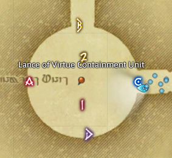

AV
- Setup markers at AV.
- Ready check.
- Kill AV.

Host
- Wait for support to arrive.
- Check shells
- Do ready checks for explanations.
- Do explanations.
- Do ready checks.
- Do pull timer (braveries, ranged/caster lb on 4)
Explanations
- AV can change his colour
- He can be light or dark
- AV will spawn some puddles
- Light and dark puddles will appear around arena
- If the puddles match AV's colour, they will double in size
- So we move close to the puddles that are the opposite colour of AV
- You can move across the puddles when they appear, but don't be inside any of them when they expand
- Other than that
- AV will split the room in light and dark
- If AV is light, we go to dark
- If AV is dark, we go to light
- AV will also tether orbs to players
- 8 orbs will tether to 8 random players
- 4 light orbs and 4 dark orbs
- 8 small puddles will also appear
- You need to take your orb to a puddle of the opposite colour
- If the orb touches you, it will explode
- You can only be 1 person per puddle, so if you can't find a puddle, take your orb to the edge of the arena
Timeline
RaidwideColor change- Puddles
- Javelin
Color change- Impact Stream
TankbusterColor change- Puddles
Raidwide- Orbs + Javelin
TankbusterRaidwideRaidwide- Proximity (Go to middle)
- Triple Impact Stream
- Proximity (Go to edges and back)
- Javelin
After Triple Impact
TankbusterRaidwide- Adds
- Orbs + Javelin
RaidwideColor change- Puddles
- Proximity (Go to middle)
- Impact Stream (Clone)
- Impact Stream
- Javelin
Raidwide- Adds
- Orbs + Javelin
TankbusterRaidwideColor change- Puddles
- Proximity (Go to middle)
- Impact Stream (Clone)
- Impact Stream
- Javelin
RaidwideEnrage